약 4만~4만 5천 년 전 현생 인류가 유럽에 정착.
이후 유럽에서 네안데르탈인과의 혼혈, 빙하기 환경에 대한 적응, 유전적 변이가 진행 백인의 탄생.
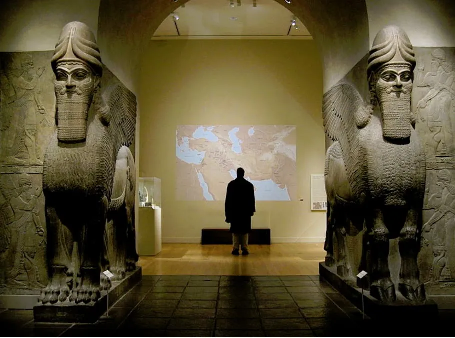
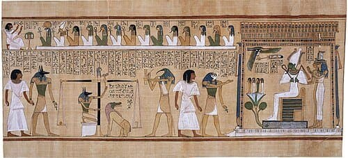
메소포타미아와 이집트: 수학과 과학의 출발 (기원전 3500년~기원전 500년)
60진법,산술,대수와 같은 기초적 수학이 창조되었고, 지식을 문자와 수량으로 기록하고 체계화했다는 데 의의가 있다.
그러나 계산과 예측에 강했지만 자연현상을 일반적인 수학 법칙으로 설명하는 체계가 없었기에 더이상 발전하지 못한채 멸망한다.
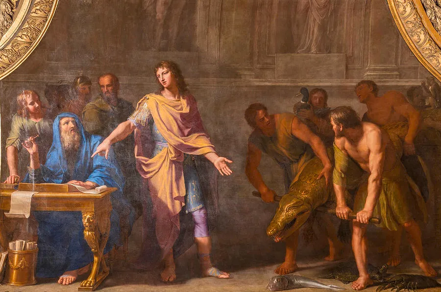
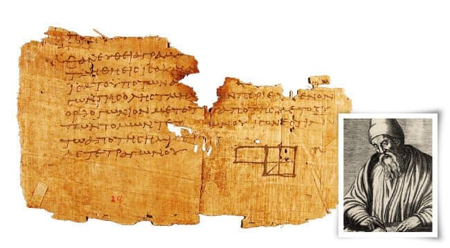
고대 그리스: 자연철학과 이론수학의 탄생
(기원전 800년~기원후 300년)
서양 과학사에서 가장 중요한 전환점 중 하나다 기하학,논리학,기계공학,천문학 등
그리스인들이 수학이나 과학을 처음 발견한 것은 아니지만 자연철학자들은 단순히 현상을 관찰하는 데서 그치지 않고 자연현상의 근본 원리를 탐구했다.
자연현상을 신화가 아닌 자연적 원리로 설명하려는 시도, 수학을 계산에서 증명으로 발전시킨다.
공리적,연역적 체계는 이후 수학 발전의 기본적인 방법론이 됐다.
로마 제국: 이론보다는 공학과 응용기술
기원전 753년~서기 476년(서로마 제국 기준)
로마의 역사적 역할은 그리스,헬레니즘의 지식과 기술을 광대한 제국의 행정,건축,군사,경제에 적용하고 확산시킨 것이라고 볼 수 있다.
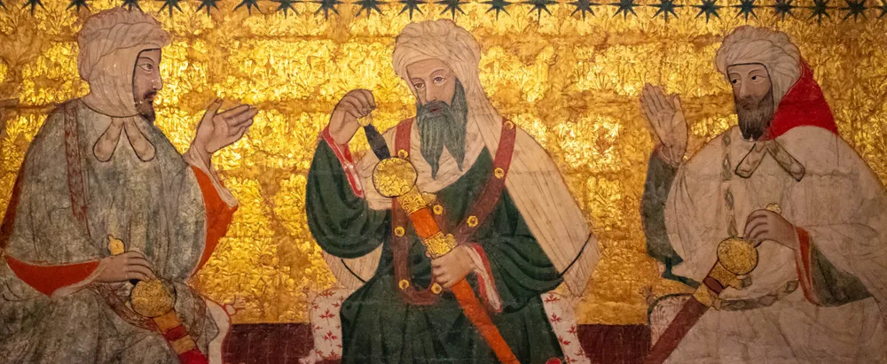
중세 이슬람권: 고대 그리스 과학을 계승하다 (8~14세기)
인도의 0과 십진 위치기수법을 수용하고 발전시킴 고대 그리스 학문을 아랍어로 번역하고 연구했으며 서양 과학사의 중요한 연결고리다.
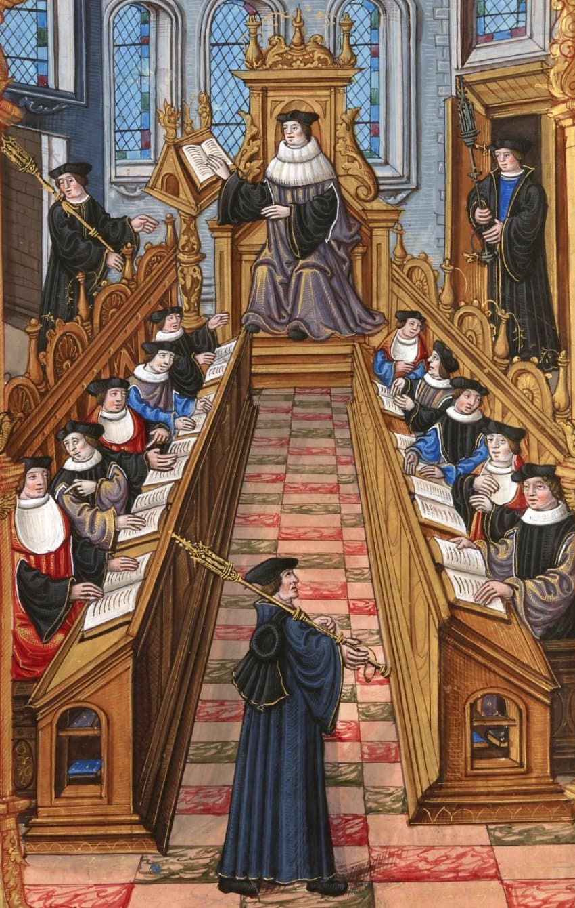
중세 유럽: 고대 지식의 재유입과 대학의 탄생 (5~15세기)
그리스,아랍 학문의 대규모 번역과 수용 유클리드의 《원론》,아리스토텔레스의 자연철학,프톨레마이오스의 천문학 등
대학이 탄생했는데 중세 유럽의 대학은 근대 과학 발전에 제도적 기반이 된다. 지식이 개인의 취미나 특정 왕실의 후원에만 의존하지 않고 교육기관을 통해 전승되는 구조가 발전하기 시작한 것이다.
이미 정밀한 기계식 시계가 나왔으며 15세기 중반 요하네스 구텐베르크가 금속활자 인쇄술을 발전시킨다.
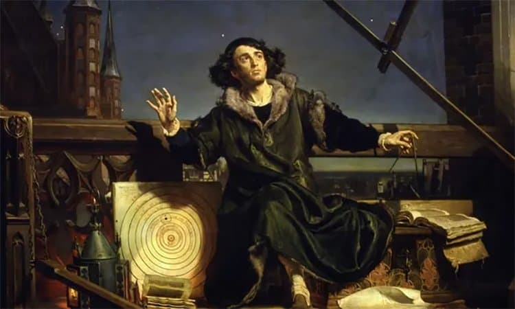
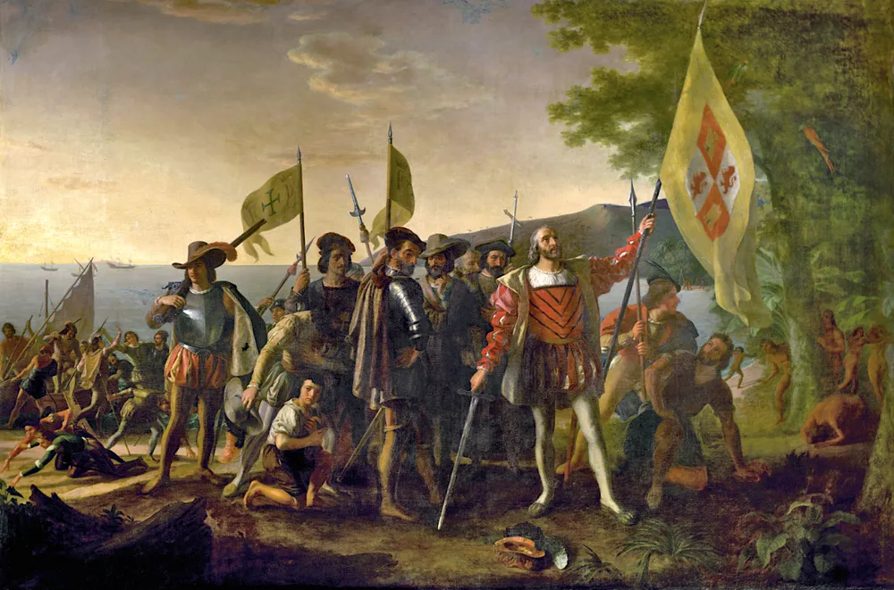
르네상스와 대항해시대: 과학혁명의 전야
14~16세기
르네상스는 고대 그리스,로마의 문헌과 예술을 재발견하고 새로운 학문적 탐구를 촉진한 시기로 유럽의 경제, 항해, 군사, 인쇄, 교육이 함께 변화하고 있었다.
특히 1543년 코페르니쿠스의 《천구의 회전에 관하여》는 지구가 우주의 중심이라는 기존 관념에 근본적인 도전을 했다.
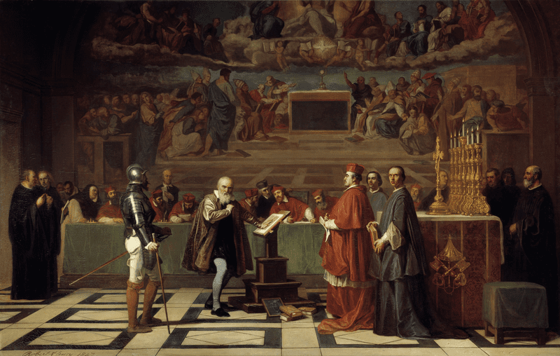
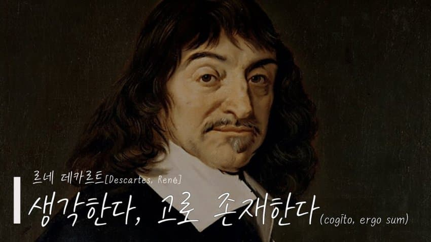
16~17세기 과학혁명: 근대 과학의 탄생
고대 그리스에서 발전한 수학과 자연철학이 중세 이슬람권과 유럽을 거쳐, 르네상스 이후 새로운 실험과 관측 기술이 결합하기 시작한다.
자연현상을 수학과 실험으로 설명하려는 방법론.
귀납적 탐구와 경험적 연구의 중요성을 강조. 기하학과 대수학을 연결하면서 수학적 방법으로 공간과 운동을 분석할 수 있는 기반을 마련했다.
좌표평면과 해석기하학 미적분학 그리고 화학과 물리학이 발전한다.
또한 1660년: 영국 왕립학회를 설립해 과학을 제도화한다.
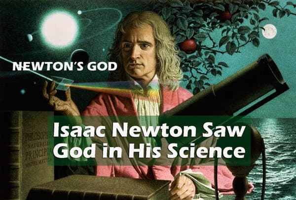
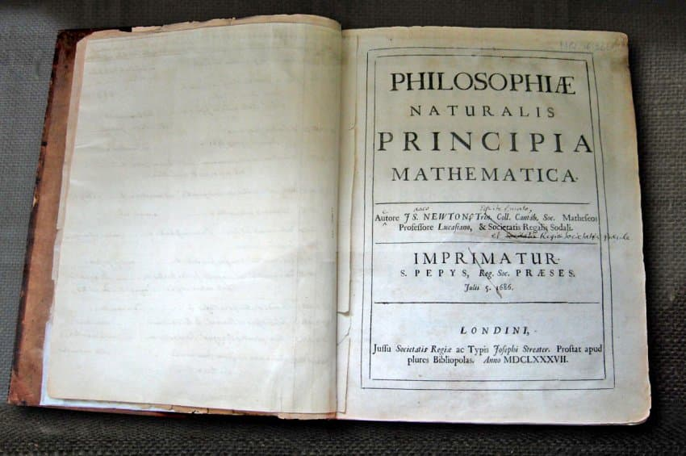
특히 뉴턴의 1687년 《자연철학의 수학적 원리》 출판으로 근대 과학은 엄청난 도약을 이룬다.
축척된 모든 지식을 하나의 수학적 체계로 통합했는데
이것이 중요한 이유는 지상에서 물체가 움직이는 원리와 천체가 움직이는 원리를 동일한 물리 법칙으로 설명할 수 있게 된것이다. 백인이 세상만물을 지배하고 조작할 능력을 손에 넣은것이다.
뉴턴 역학은 이후 기계공학, 천문학, 탄도학, 토목공학, 증기기관의 설계와 분석 등에 영향을 주는 핵심적인 지식 기반이 됐다.
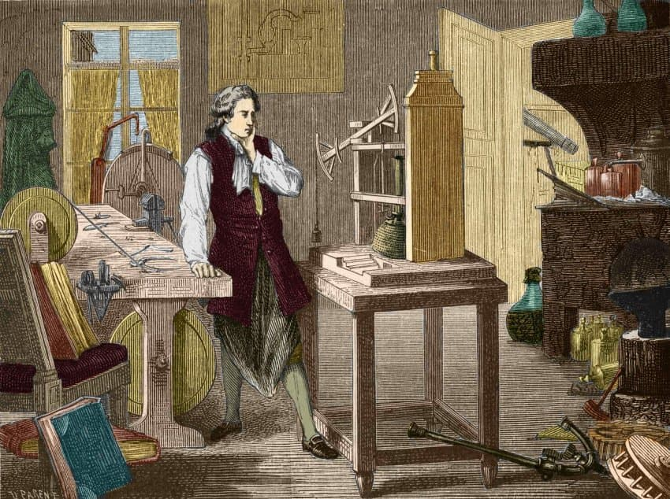
1698년~1712년 파스칼 대기압 이론을 기반으로한 실용적인 대기압 증기기관의 등장. 증기기관은 기존의 수차와 풍차에 의존하지 않고 연료를 이용해 기계적 동력을 생산할 수 있는 가능성을 보여줬다
1769년~1780년대 제임스 와트의 증기기관 개선
와트의 핵심 발명은 별도의 응축기로 기존 뉴커먼 기관은 실린더를 가열하고 냉각하는 과정에서 에너지 손실이 컸다.
와트는 응축 과정을 분리해 효율을 크게 개선했다. 단순히 광산의 물을 퍼내는 장치였던 증기기관을 다양한 산업에서 사용할 수 있는 동력원으로 발전한다.
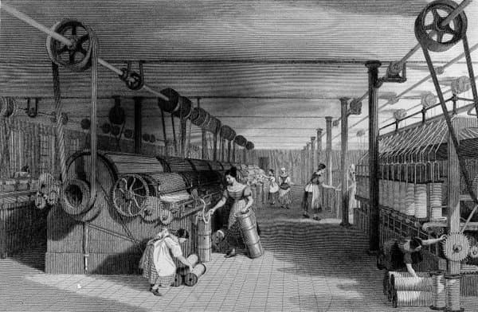
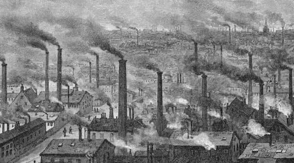
17~18세기 영국의 산업혁명
축적된 수학,과학,기술에 석탄,자본,시장,노동,제도가 결합하면서 기계화와 대량생산이 시작된다.
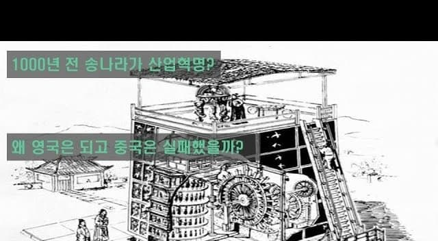
송나라 산업혁명이 얼마나 터무니없는 소리인지 느껴진다.
- dc official App
댓글
댓글 보관 대기 중입니다. 원문 응답 오류가 있으면 다음 실행에서 다시 수집합니다.